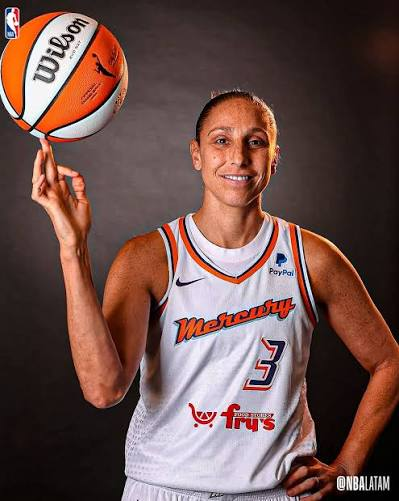
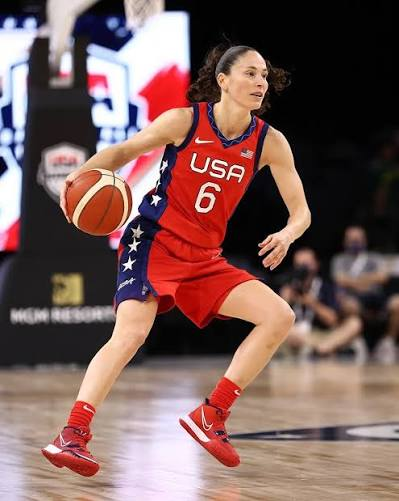
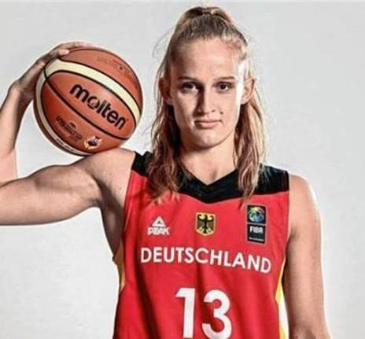
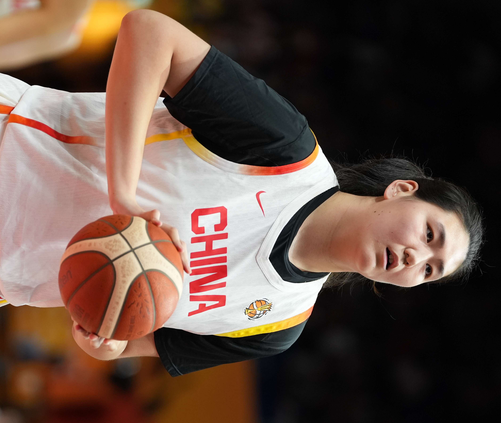
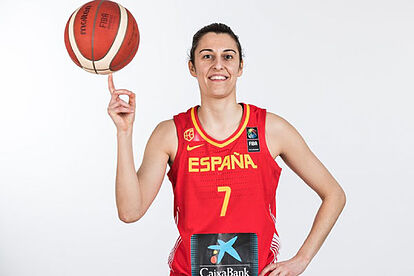

UNA DÉCADA • UNA GENERACIÓN • MUCHOS CLÁSICOS
Las mejores partidos de esta decada
Descubre los partidos que marcaron una generación y que siguen siendo recordadas hasta hoy.
Ver películas →01 / COLECCIÓN
Jugadoras destacadas
Una selección de clásicos del cine de los años 80.
5 películas

2000Exjugadora de baloncesto
Diana Taurasi
Considerada una de las más grandes de la historia, tres veces campeona de la WNBA y máxima anotadora histórica de la liga.
Ver detalles
Diana Taurasi (Chino, California, 11 de junio de 1982) es una exjugadora de baloncesto estadounidense con ascendencia argentina, considerada una de las mejores y más laureadas basquetbolistas de todos los tiempos.
Nació de padre italiano y madre argentina pasando parte de su infancia en Rosario, Argentina donde adoptó grandes raíces culturales del país. Brilló en la universidad con las UConn Huskies de la Universidad de Connecticut, ganando tres campeonatos consecutivos de la NCAA (2002, 2003 y 2004) y el prestigioso Premio Naismith en 2000 y 2003.

1988Exjugadora de baloncesto
Sue Bird
Leyenda de la WNBA con múltiples campeonatos y récords de asistencias.
Ver detalles
Sue Bird es una exjugadora de baloncesto estadounidense, considerada una de las mejores bases y ganadoras en la historia de este deporte
Nació en Syosset, Nueva York, el 16 de octubre de 1980. Brilló en la Universidad de Connecticut (UConn Huskies) donde ganó dos campeonatos de la NCAA (2000 y 2002). Fue elegida en el número uno del draft de 2002 por el Seattle Storm, equipo en el que jugó toda su carrera profesional de 21 años.

1984Jugadora de baloncesto
Leonie Fiebich
Estrella alemana y campeona de la WNBA con las New York Liberty.
Ver detalles
Leonie Fiebich es una jugadora de baloncesto profesional alemana de 1.93 metros de altura que juega como alero en las New York Liberty de la WNBA y en la selección nacional de Alemania
Creció en Landsberg y se formó en el baloncesto alemán pasando por equipos de Múnich antes de dar el salto profesional. Fue elegida en la segunda ronda (posición 22) del Draft de la WNBA de 2020 por Los Angeles Sparks, aunque sus derechos pasaron por Chicago Sky antes de afianzarse en la liga con las New York Liberty, equipo con el que se proclamó campeona de la WNBA en 2024 e ingresó en el All-Rookie Team.

1984Jugadora de baloncesto china
Zhang Ziyu
La jugadora china que revoluciona el deporte gracias a su impresionante estatura de más de 2.20 metros
Ver detalles
Zhang Ziyu es una jugadora de baloncesto profesional china de 19 años y 2,23 metros de estatura, considerada la baloncestista más alta de la historia
Nació en una familia con antecedentes en este deporte: su padre midió 2,13 metros como jugador profesional y su madre, Yu Ying, alcanzó los 1,98 metros y fue internacional con la selección de China.

1984Baloncestista española
Alba Torrens
Capitana y leyenda de la selección española, con múltiples medallas internacionales.
Ver detalles
Alba Torrens es una destacada baloncestista española, considerada una de las mejores jugadoras de la historia de este deporte en su país.
Comenzó en el baloncesto de forma casual casual tras practicar fútbol en su localidad natal, ingresando en categorías de formación y debutando profesionalmente en clubes como el CB Islas Canarias.
02 / EQUIPOS
La magia de los mejores Equipos
Los mejores partidos los vas a poder encontar aqui
03 / jugadoras
Posters & nostalgia
04 / CONTACTO
¿Cuál es tu jugadora favorita?
Comparte con nosotros tu equipo y jugadora favorita.